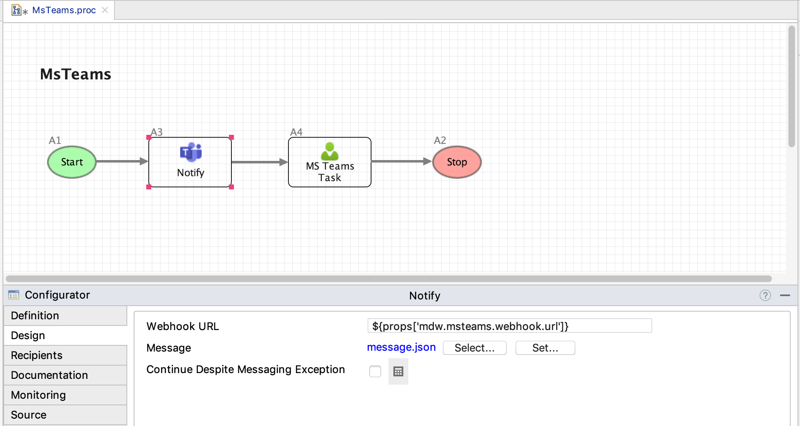

The Microsoft Teams activity gives you the ability to send MDW notifications to a Teams channel through a connector with an incoming webhook.
MS Teams integration depends on the com.centurylink.mdw.msteams asset package. To get started with MS Teams
notifications, discover and import this package as described in the
MDW Studio User Guide
To create an incoming webhook for a channel in the MS Teams app, click on the 'More options' ellipses for the channel, then select Connectors. In the connectors list find Incoming Webhook and click Configure. Detailed instructions are available in Microsoft's documentation on the topic. Once you've got a webhook URL configured, add it to your mdw.yaml config file as 'mdwteams.webhook.url'. Note: it's highly recommended to encrypt this value as described in the MDW Configuration Guide.
In MDW Studio, after dragging an MS Teams activity from the Toolbox onto your process canvas, select it and click on the Configurator Design tab. Here you'll specify the notification template asset, which is a JSON asset with your message content.

Message content is formatted according to
Microsoft's Documentation.
Here's the
sample notification included in the com.centurylink.mdw.msteams asset package:
{
"@context": "https://schema.org/extensions",
"@type": "MessageCard",
"themeColor": "0072C6",
"title": "A message from MDW",
"text": "Something important has happened!",
"potentialAction": [
{
"@type": "OpenUri",
"name": "Open in MDWHub",
"targets": [
{ "os": "default", "uri": "${props['mdw.hub.url']}" }
]
}
]
}
Notice that this template contains the expression ${props['mdw.hub.url']}. Values from the activity's
ActivityRuntimeContext
are available to reference in your template's expressions.
The MDW notifications automated tests contain a functional workflow process with an MS Teams notification activity as well as a manual task configured with the Teams task notifier (see MsTeams.proc).